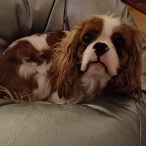

Vi startade vår kennel Hund för att vår passion för hundar har funnitsi många år nu. Vi började med vår hobby 2010 som nu blivit vårt heltids jobb ända in i 2021. Att jobba med hunduppfödning är mycket kul och vi säljer till köpare världen runt. Med det kommer ett stort ansvar och vi följer alla lagar som finns. Kosten våra hundar får är hemmagjord och det får rasta sig varje dag. Vi ger dem också en god mängd med klappar och lek
Vi äger också en som inte är en fralla, han är lite udda men han anpassar sig bra iallafall